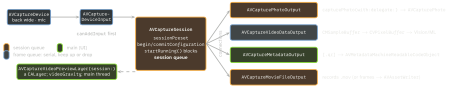

ios-platform · folio
In one line: AVCaptureSession is a graph: devices → inputs →
session → outputs, configured and started on a private serial queue
(startRunning() blocks), frames delivered on another serial queue,
UI on main. AVAudioSession is policy, not playback: category + mode +
options tell iOS whether you mix, duck, obey the silent switch, record, and keep
playing in the background.
Download PDF Print view LaTeX source


Capture
- Permission:
NSCameraUsageDescription(+ …Microphone…) — missing key = crash on access.AVCaptureDevice.authorizationStatus(for:)→requestAccess(for:)(completion off main;asyncoverload);.denied/.restricted→ Settings. Mic alone:AVAudioApplication.requestRecordPermission(iOS 17). - Configure between
beginConfiguration()andcommitConfiguration()(atomic camera/preset swap);canAdd…before everyadd…. Focus/exposure/torch:lockForConfiguration()→ set → unlock (checkis…Supported). - Frames:
captureOutput(_:didOutput:from:)at frame rate;alwaysDiscardsLateVideoFrames(defaulttrue) drops rather than queues — drops arrive indidDrop. - Photo: a new
AVCapturePhotoSettingsper shot;photoQualityPrioritization.speed/.balanced/.quality. Saving is the Photos framework’s job (PHPhotoLibrary, add-only usage key). - Scanning without the graph: VisionKit
DataScannerViewController(iOS 16) — text + barcodes, live UI. - Rotation (iOS 17):
videoRotationAngle+AVCaptureDevice.RotationCoordinatorreplacevideoOrientation. - Interruptions:
AVCaptureSessionWasInterrupted/…InterruptionEnded; reasons e.g.videoDevice NotAvailableInBackground,…WithMultipleForegroundApps(iPad multitasking),…InUseByAnotherClient. Runtime error → restart on the session queue. Hot device (ProcessInfo.thermalState) → lower preset/fps.
Example — configure off main
func configure() { // runs on sessionQueue
session.beginConfiguration()
defer { session.commitConfiguration() }
guard let cam = AVCaptureDevice.default(.builtInWideAngleCamera,
for: .video, position: .back),
let input = try? AVCaptureDeviceInput(device: cam),
session.canAddInput(input) else { return }
session.addInput(input)
let frames = AVCaptureVideoDataOutput()
frames.setSampleBufferDelegate(self, queue: videoQueue) // serial
if session.canAddOutput(frames) { session.addOutput(frames) }
let meta = AVCaptureMetadataOutput(); session.addOutput(meta)
meta.setMetadataObjectsDelegate(self, queue: .main)
meta.metadataObjectTypes = [.qr] // AFTER addOutput
}
sessionQueue.async { configure(); session.startRunning() }Audio session — category = defaults
| Category | silent sw. | mixes | BG * | for |
|---|---|---|---|---|
.ambient | silenced | yes | no | game/UI sound |
.soloAmbient | silenced | no | no | default |
.playback | plays | no† | yes | media, podcasts |
.record | — | no | yes | recorder |
.playAndRecord | plays | no† | yes | VoIP, video call |
[1pt] * also needs
UIBackgroundModes audio. † unless
.mixWithOthers / .duckOthers. .ambient/.soloAmbient
also stop on screen lock.
setCategory(_:mode:options:)→setActive(true)(fails during a call); end with.notifyOthersOnDeactivation.- Modes tune DSP/routing:
.moviePlayback,.spokenAudio,.voiceChat(echo cancel),.videoChat,.measurement. Options:.duckOthers,.mixWithOthers,.defaultToSpeaker(elseplayAndRecorduses the earpiece),.allowBluetoothA2DP. - Interruption:
.began— already stopped, update UI;.ended+.shouldResume→ reactivate, resume. An.endedis not guaranteed. - Route change
.oldDeviceUnavailable(headphones out) → pause.mediaServicesWereReset→ rebuild all audio objects. - Player:
AVAudioPlayer= local file, simple ·AVPlayer= streams/HLS, video ·AVAudioEngine= real-time node graph (mixer, effects,installTap); restart it onAVAudioEngineConfigurationChange. - Lock screen =
MPNowPlayingInfoCenter+MPRemoteCommandCenter; a.mixWithOthersapp can’t be Now Playing.
Traps
startRunning()on main = UI freeze; config from two threads = races. One serial session queue owns the session.metadataObjectTypesbeforeaddOutput(or an unsupported type) raises an exception — not a silent no-op.- Keeping
CMSampleBuffers past the callback starves the capture pool → dropped frames. Copy what you need. - “No sound on silent” = default
.soloAmbient; use.playback.AVAudioPlayerin a localletis deallocated and stops.
Remember
Three queues, one graph · category + mode + options = policy · pause on began and on headphones out.